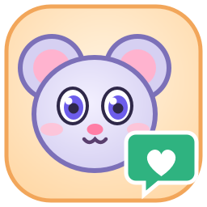

眼動鼠生活日常工具
給漸凍人（ALS）與上肢不便的朋友：用眼睛說話、求助、表達身體感覺、注音打字、使用電腦。
看著就選
按鍵像立體鍵帽，看著會浮起、填滿後按下；看別處就取消。選過要先移開視線才能再選，避免重複。
按鍵像立體鍵帽，看著會浮起、填滿後按下；看別處就取消。選過要先移開視線才能再選，避免重複。
快速回答與緊急照護
是／不是／等一下最大顆；抽痰、呼吸器、呼吸困難一看就說。
是／不是／等一下最大顆；抽痰、呼吸器、呼吸困難一看就說。
3D 身體感覺
看著 3D 人體不舒服的部位，再選痛、癢、麻，說出「我的左肩膀有點痛」。
看著 3D 人體不舒服的部位，再選痛、癢、麻，說出「我的左肩膀有點痛」。
眼控注音打字
不用選聲調、自動分字、詞語候選與聯想，打字看的次數更少。
不用選聲調、自動分字、詞語候選與聯想，打字看的次數更少。
求助與斷電警報
求助鈕發出警報；筆電被拔掉電源時自動警報，提醒檢查呼吸器電源。
求助鈕發出警報；筆電被拔掉電源時自動警報，提醒檢查呼吸器電源。
暫停與休息
暫停後只有看著「繼續」三秒才恢復；休息黑畫面讓眼睛放鬆。
暫停後只有看著「繼續」三秒才恢復；休息黑畫面讓眼睛放鬆。
自然語音
內建句子預錄女聲／男聲；自己新增的句子用電腦語音朗讀。
內建句子預錄女聲／男聲；自己新增的句子用電腦語音朗讀。
語音動態教學
眼動鼠一邊說明、一邊用示範游標實際操作給你看。
眼動鼠一邊說明、一邊用示範游標實際操作給你看。
線上版不用安裝，用電腦或平板的瀏覽器打開就能用（Chrome、Edge、Safari）；用滑鼠停留、手指點，或電腦上的眼控軟體操作。斷電警報、調整系統音量、回到桌面、連線眼動鼠等功能需要安裝電腦版。
macOS 第一次開啟：在「應用程式」裡對著「眼動鼠生活日常工具」按右鍵 →「打開」→ 再按「打開」（程式未經 Apple 公證）。
搭配 眼動鼠（Tobii 眼動儀或攝影機）使用效果最好；沒有眼動鼠時也可以用滑鼠或其他眼控軟體。